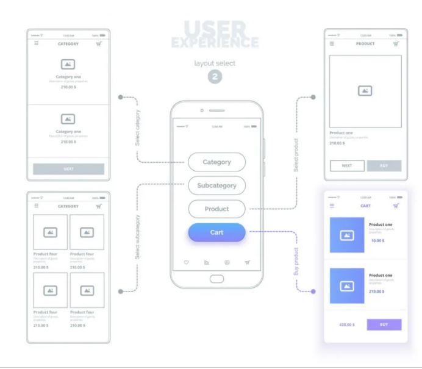

HTML SEO
와이어 프레임이란?
그와이어 프레임은 손이나 컴퓨터 드로잉으로 표현할 수있는 저 충실도 렌더링 디자인 프로토 타입으로 와이어 프레임, 사각형, 텍스트, 화살표 및 기타 요소로 구성됩니다. 주요 기능은 웹 디자이너 (UX 디자이너)가 웹 페이지 또는 응용 프로그램의 콘텐츠 레이아웃에 집중할 수 있도록하는 것입니다.이를 통해 다음 3 가지 디자인 요소를 전달할 수 있습니다.
- 1. 정보 아키텍처 (IA) : 정보 아키텍처는 웹 사이트의 내용과 구조를 설명하는 과학적 방법입니다. 와이어 프레임은 웹 사이트 구조의 표현을 확인하여 사용자가 원하는 정보를 직접 찾을 수 있는지 확인할 수 있습니다.
- 2. 사용자 인터페이스 (UI) : Wireframe에서 제공하는 웹 페이지 또는 애플리케이션의 구조, 기능, 콘텐츠 및 레이아웃과 같은 정보를 기반으로 사용자의 실제 경험을 유추 할 수 있으며 다음과 같은 UI 구성 요소의 레이아웃을 최적화 할 수 있습니다. 요소의 길이, 너비 및 정렬 및 간격 등
- 3. 타이포그래피 : 와이어 프레임은 또한 다른 텍스트를 사용하여 다른 정보를 구분하여 웹 사이트에서 제공하는 시각 효과를보기 위해 글꼴을 조정할 수 있습니다. 중요한 정보는 가능한 한 큰 글꼴로 표시해야합니다. 강조해야하는 내용도 굵게 또는 기울임 꼴입니다. 표시 할 본문입니다.또한 특수 글꼴을 사용하려면 더 나은 시각 효과를 위해 글꼴을 확대하는 것도 좋습니다.
와이어 프레임을 사용하면 좋은점은?
- 기업 자원 절약 : 시장에는 다음과 같이 사용하기 쉬운 와이어 프레임 그리기 도구가 많이 있습니다.UX핀,발사믹或축이러한 도구는 매우 편리하고 빠릅니다.
- 사용자 피드백의 정확한 수집 : 시각적 디자인의 간섭없이 사용자는 기능, 정보 아키텍처, 운영 프로세스 및 사용자 인터페이스에 더 집중하고 웹 디자인에 대한 피드백을 제공 할 수 있습니다.
- 빠른 디자인 조정 : 웹 디자인을 조정해야하는 경우 와이어 프레임을 원본 코드 나 시각적 디자인에 영향을주지 않고 빠르게 수정할 수도 있습니다.
고객 및 엔지니어와의 편리한 커뮤니케이션 : 와이어 프레임을 사용하면 웹 디자이너가 고객 및 엔지니어와 효과적으로 커뮤니케이션하고 페이지의 기능과 표현을 빠르게 이해할 수 있습니다